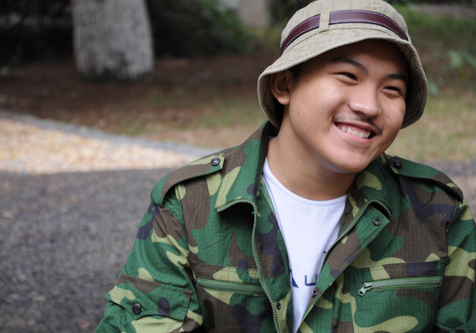
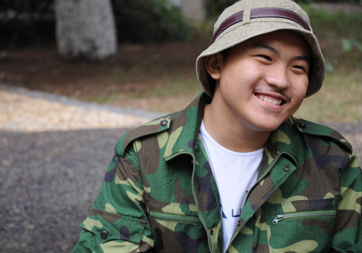

About Myself
Hi, I'm Tao Yu, Here's a birief introduction of my work. But I want to let you know more about me. I enjoy life, I write novels, and I love sportes and travel. Hope to share more of my thought later!
Passionate, Optimistic, Funny

Hi, I'm Tao Yu, Here's a birief introduction of my work. But I want to let you know more about me. I enjoy life, I write novels, and I love sportes and travel. Hope to share more of my thought later!

Develop a search system search for club activities, and then recommend to user, based an KNN method
Develop a security crawler for ajax web application based on finite-state-machine
Analyzing security of practical quantum communication system at several topic: statistical fluctuation of deocy BB84 protocol, measurement device independent QKD, quantum secure direct communication-
See the world.
Let see what will happen.
Tao Yu, An Hui Yao, Liu Dunwei. Attacking a measurement device independent practical quantum- key-distribution system with wavelength-dependent beam-splitter and multi-wavelength sources [J]// Advanced Materials Research. 945-949, 2277-2283, 2014
Huiyao An, Tao Yu, Dunwei Liu. Quantum Secure Direct Communication Over Noisy Channel Based on Stabilizer Codes Theory[J].Acta Sinica Quantum Optica,20(3):187-191 2014
Huiyao An, Dunwei Liu, Tao Yu. Enhanced Quantum Key Distribution on Solving Beam Splitter Attack and Rayleigh Scattering Effect[J].Acta Sinica Quantum Optica,20(1):3034 2014
Yang Song, Huiyao An, Tao Yu, A New Architecture of Ajax Web Application Security Crawler with Finite-State Machine, The 6th International Conference on Cyber-enabled Distributed Computing and Knowledge Discovery (CyberC 2014)
Huiyao An, Dunwei Liu, Tao Yu. A Solution for Beam Splitter Attack on BB84 Protocol. 2014 International Conference on Computer, Communications and Information Technology (CCIT 2014). Atlantis Press, PP.186-189. 2014
Huiyao An, Dunwei Liu, Tao Yu. Beating the Beam Splitter Attack and Rayleigh Scattering Ef- fect[C]//2014 International Conference on Remote Sensing and Wireless Communications (RSWC 2014). DEStech Publications, pp. 435-440. 2014
Huiyao An, Dunwei Liu, Lei Li, Ning Qi, Tao Yu, Xing Zhang. A Coustomized Memcached FPGA Chip for Big Data. 2014 IEEE 12th International Conference on Solid-State and Integrated Circuit Technology. 2014 (Accepted)